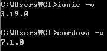
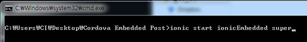
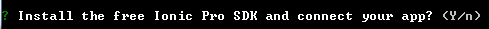
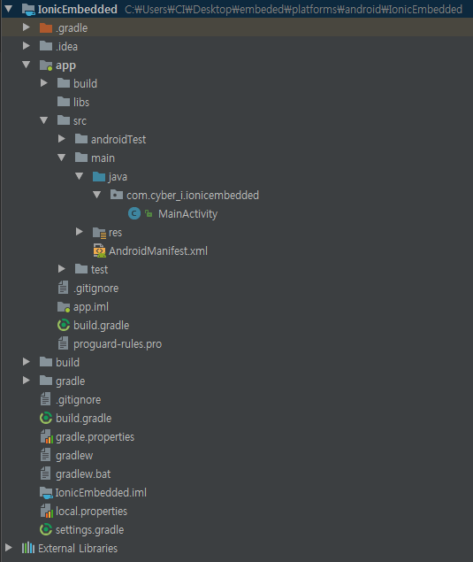
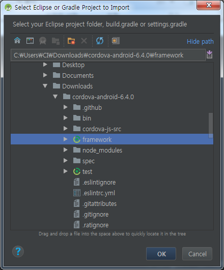
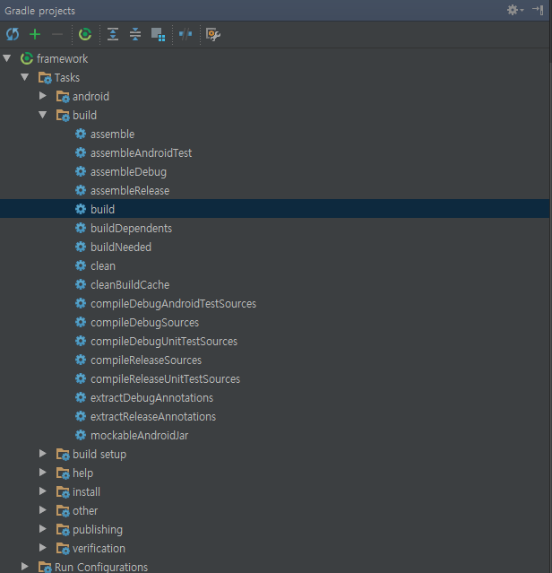
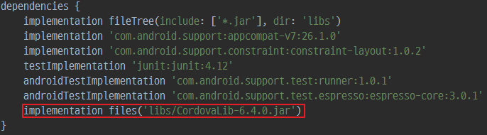
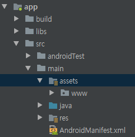
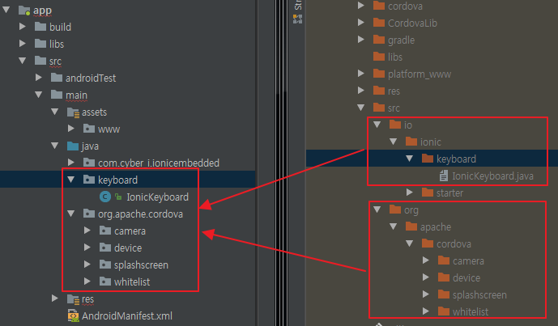
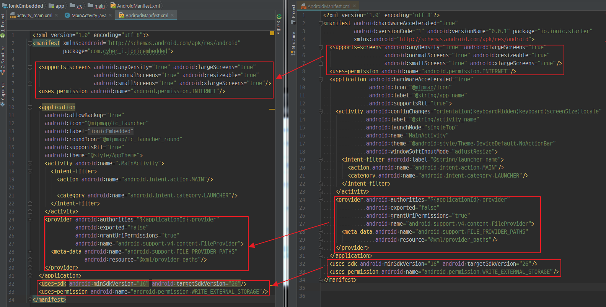

Ionic Project를 Android Native 내에 Embedded 시키는 방법 #1
참고
- http://www.catharinegeek.com/embed-cordova-webview-in-android-native-app/
- https://github.com/Adobe-Marketing-Cloud-Apps/app-sample-android-phonegap/wiki/Embed-Webview-in-Android-Fragment
- https://github.com/rajivnarayana/CordovaFragments
- https://github.com/shucc/CordovaFragment
함께보기
Ionic Project를 Android Native 내에 Embedded 시키는 방법 #1
Ionic Project를 Android Native 내에 Embedded 시키는 방법 #2
Ionic Project를 Android Native 내에 Embedded 시키는 방법 #3
본 post에서는 Ionic 프로젝트를 Android Native 내에 삽입하기 위해 필요한 사전 준비 작업에 대해 설명합니다
본 post의 Ionic 프로젝트는 Ionic CLI 3.19.0과 cordova 7.x로 작성되었습니다.

Ionic Project 생성 및 빌드
- Ionic Project 생성

ionic start를 통해 super 템플릿으로 프로젝트를 생성합니다.
super 템플릿에는 기본적인 페이지들과 Camera Plugin을 추가로 설치했을 때 Camera기능을 추가적인 코딩 없이 바로 사용할 수 있도록 작성되어 있습니다.

Ionic Pro SDK는 설치하지 않습니다. Camera Plugin 설치
ionic cordova plugin add cordova-plugin-cameraAndroid Platform 추가
ionic cordova platform add androidBuild
ionic cordova build android
위의 과정을 모두 거치면 ionicEmbedded/platforms/android 내에 Android 프로젝트가 생성된다.
Android Project 생성
IonicEmbedded라는 어플리케이션 명으로 Android Project를 만들어준다.
Ionic은 Android 4.4 (API 19) 이상을 지원하므로 SDK를 4.4 이상으로 맞춘 뒤, 프로젝트를 만들어주면 된다.
default Activity는 Empty Activity로 하고, Activity의 Name 역시 MainActivity로 한다.

Ionic Project의 내용을 Android Project에 복사
Ionic Project에서 빌드로 나온 output을 Android Project에 복사해주면 된다
CordovaLib
Ionic Project를 Android Project로 옮기는데 가장 중요한 작업이다.
IonicProject/platforms/android/CordovaLib 내에 있는 코드를 jar 파일로 변환한 뒤, AndroidProject/app/libs 안에다 넣어주면 된다.
하지만 CordovaLib 내의 코드를 jar 파일로 변환시키기 위해선 아래와 같은 작업을 추가로 해주어야 한다.
본 post에서는 6.4.0을 사용한다
생략하고 바로 받기: CordovaLib-6.4.0.jar, CordovaLib-7.0.0.jar
CordovaLib를 jar로 만들기
- cordova-android source를 받는다. 6.4.0 또는 7.0.0
여기서는 6.4.0을 사용해 jar파일을 만든다 - 내려받은 cordova-android source 내의 framework를 android studio에서 열어준다.
import project를 통해 cordova-android/framework를 직접 import 시키면 된다.
 - gradle build를 통해 framework를 빌드해준다

성공적으로 빌드가 된 경우framework/build/intermediates/intermediates-jars/release/classes.jar가 생성된다
만약 lint 도중 에러가 발생하는 경우build.gradle파일 내에android { }영역을 찾아 아래와 같이 작성해준다1
2
3
4
5
6...
android {
lintOptions {
abortOnError false
}
...
생성된 파일을 CordovaLib로 이름을 바꾼 뒤 AndroidProject/app/libs에 넣어준다.
이후 app/ 아래에 있는 build.gradle에 implementation files('libs/CordovaLib.jar')를 적어준다.

성공적으로 연결이 된 경우, CordovaLib 내의 클래스들을 사용할 수 있게 된다.
Assets
IonicProject의 platforms/android/assets/ 아래에 있는 www/ 디렉토리를 AndroidProject에 통째로 복사한다.
platforms/android/assets/www/ -> app/src/main/assets/www/

Resources
platforms/android/res/ 아래에 있는 파일들을 말한다.
splashscreen이나 app icon등 resource 파일들이 존재한다.drawable-로 시작하거나 mipmap-으로 시작하는경우 반드시 옮기지 않아도 된다.
Resources에서 가장 중요하게 봐야될 부분은 xml/config.xml로, Cordova에서 사용하는 설정들이 모두 담겨있다.
따라서 xml/만큼은 반드시 AndroidProject로 복사해 주어야 한다.
그 외의 plugin에서의 사용을 위해 임의로 만든 몇몇 파일들이 존재하는데, 예로 cordova-plugin-camera는 xml/provider_paths.xml파일이 존재한다.
이 경우도 반드시 복사를 해주어야 한다
platforms/android/res/ -> src/main/res/
몇몇 파일만을 특정하여 복사하는게 어려운경우, res 디렉토리를 통짜로 복사하면 된다.
Plugins Source
platforms/android/src/아래에 있는 .java파일들을 말한다.
IonicProject 루트에 위치한 config.xml 파일 내의 <widget id=""> 에 적혀있는 id가 Android App에서 사용하는 MainActivity 파일이 위치한 경로이다.
Ionic Super 템플릿은 <widget id="io.ionic.starter" />로 되어 있으며, platform/android/src/io/ionic/starter/MainActivity.java가 위치한다
위의 파일을 제외한 나머지는 모두 Cordova에서 사용하는 Plugin이므로 모두 복사해주어야 한다.
platforms/android/src/plugin_folders -> src/main/java

AndroidManifest
platforms/android/AndroidManifest.xml은 Android 관련 설정이 담겨있다.
위의 파일을 토대로, AndroidProject의 AndroidManifest.xml파일을 수정해 주어야 한다.

왼쪽이 Android Project이고 오른쪽이 Ionic Project이다.
provider 부분은 Camera Plugin으로 인해 생긴 부분이다.
위의 Resource 섹션의 provider_paths.xml을 사용한다.
위의 작업을 끝으로 Ionic Project 내의 모든 설정을 Android Project로 옮겼다.
다음장에는 Android Project에서 Ionic Project를 띄우기 위한 Native 작업에 대해 설명한다

- 글쓴이: Henotia
- 발행 일자: 2018-01-11 15:53:42
- 업데이트 일자: 2018-01-12 17:10:03
- 카테고리: Ionic
- License:
 저작자표시-비영리-동일조건변경허락 (CC BY-NC-SA 4.0）
저작자표시-비영리-동일조건변경허락 (CC BY-NC-SA 4.0）